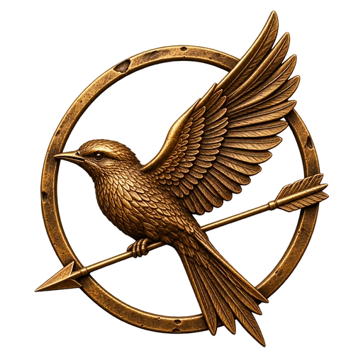

Whistle trainer

Mockingjay whistle
Pitch graph
Progress
Recent practice
How to whistle the Mockingjay signal
In District 11, Rue sang a short tune to mark the end of the workday, and mockingjays carried it across the orchards. In The Hunger Games (2012), she sings D-flat – F – E-flat – G-flat. Katniss Everdeen, played by Jennifer Lawrence, answers with G – B-flat – A – D, the whistle you can practice here. The mockingjay signal is heard again after Katniss’s speech in District 11 in Catching Fire and when Pollux whistles to the birds by the lake in Mockingjay – Part 1.
Find your pitch
Play each note and match it with a gentle, steady breath. Make the opening between your lips smaller to whistle higher. Relax it to whistle lower.
Choose a mode
- Note by note
- Hold each note until the next one lights up.
- Echo
- Listen to the phrase, then whistle it back.
- Rhythm
- Start after the count-in and follow the timing of the bars.
- Tuner
- Whistle freely and watch your pitch.
Read the graph
Follow notes aligns your whistle with the phrase. Live trace shows the latest eight seconds of your actual pitch, including pauses.
The trainer analyzes mic input on your device.